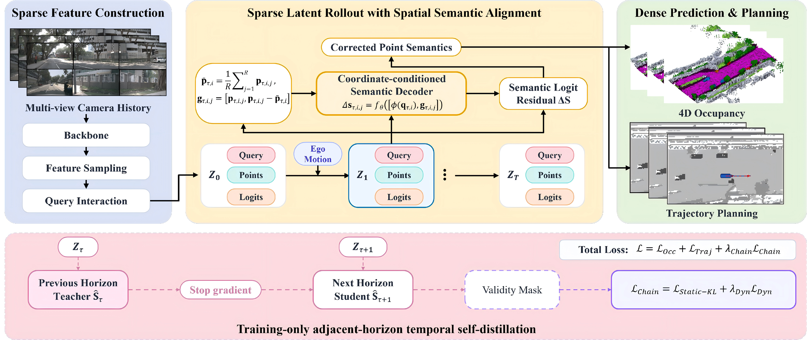
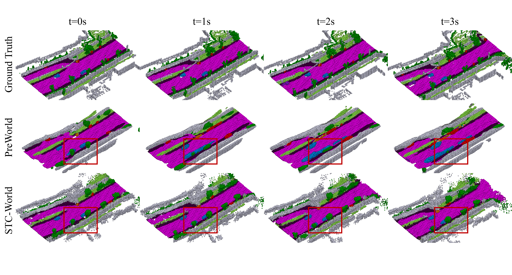
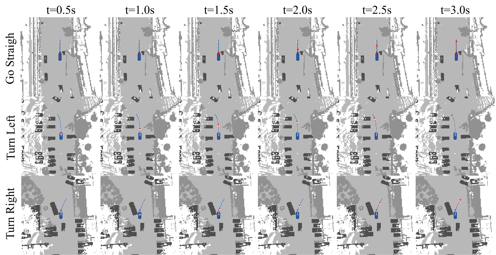

HORIZON-CONDITIONED MEMORY RETRIEVAL · SPARSE WORLD MODEL
RecallOcc: A Sparse World Model with Horizon-Conditioned Memory Retrieval for 4D Occupancy Prediction
Abstract
4D semantic occupancy forecasting can predict the future geometric and semantic evolution of 3D scenes, making it crucial for autonomous driving. Sparse occupancy world models have emerged as an important paradigm, representing 3D scenes with a small set of evolving queries for efficient long-horizon forecasting. However, existing sparse world models face a temporal-evidence bottleneck in long-horizon forecasting. They rely on scene states to implicitly carry historical information, errors propagate and accumulate over successive forecasting steps, leading to geometric and semantic deviations. To address this limitation, we present RecallOcc, a sparse occupancy world model that explicitly retrieves relevant historical geometric and semantic evidence for 4D semantic occupancy forecasting. To select useful information from historical observations, we introduce a forecast-time-conditioned hierarchical dual-path memory retrieval mechanism. Guided by the effective age and semantic compatibility of historical information, it combines query-level candidate selection with point-level geometric–semantic retrieval to provide historical evidence for sparse points at different forecast times. To fuse this evidence with future scene representations, a point-level residual adapter jointly gated by the task and forecast time separately controls residual corrections to semantics, occupancy confidence, and spatial positions. On Occ3D-nuScenes, RecallOcc achieves an average mIoU of 13.55% and an average IoU of 22.84% across the 1–3 s forecasting horizons, attaining state-of-the-art performance on both metrics. Project page: https://recall-world.github.io/.
01
Method Overview
Forecast-time-conditioned hierarchical retrieval gathers relevant historical sparse evidence for each future location.

02
Results
Main quantitative comparisons on Occ3D-nuScenes. Lower is better for L2 and collision rate; higher is better for mIoU and IoU.
| Method | Aux. Sup. | mIoU ↑ | IoU ↑ | ||||||
|---|---|---|---|---|---|---|---|---|---|
| 1s | 2s | 3s | Avg. | 1s | 2s | 3s | Avg. | ||
| OccWorld-S | None | 0.28 | 0.26 | 0.24 | 0.26 | 5.05 | 5.01 | 4.95 | 5.00 |
| RenderWorld | None | 2.83 | 2.55 | 2.37 | 2.58 | 14.61 | 13.61 | 12.98 | 13.73 |
| OccWorld-T | Semantic LiDAR | 4.68 | 3.36 | 2.63 | 3.56 | 9.32 | 8.23 | 7.47 | 8.34 |
| OccWorld-D | 3D Occ | 11.55 | 8.10 | 6.22 | 8.62 | 18.90 | 16.26 | 14.43 | 16.53 |
| OccLLaMA-F | 3D Occ | 10.34 | 8.66 | 6.98 | 8.66 | 25.81 | 23.19 | 19.97 | 22.99 |
| PreWorld | 3D Occ | 11.69 | 8.72 | 6.77 | 9.06 | 23.01 | 20.79 | 18.84 | 20.88 |
| PreWorld | 2D & 3D Occ | 12.27 | 9.24 | 7.15 | 9.55 | 23.62 | 21.76 | 19.63 | 21.62 |
| DFIT-OccWorld | 3D Occ | 13.38 | 10.16 | 7.96 | 10.50 | 19.18 | 16.85 | 15.02 | 17.02 |
| SparseWorld | 3D Occ | 14.93 | 13.15 | 11.51 | 13.20 | 22.96 | 22.10 | 21.05 | 22.03 |
| RecallOcc (Ours) | 3D Occ | 15.39 | 13.40 | 11.87 | 13.55 | 23.88 | 22.86 | 21.78 | 22.84 |
| Method | Aux. Sup. | L2 (m) ↓ | Collision Rate (%) ↓ | ||||||
|---|---|---|---|---|---|---|---|---|---|
| 1s | 2s | 3s | Avg. | 1s | 2s | 3s | Avg. | ||
| UniAD | Map, Box, Motion, Track, 3D Occ | 0.48 | 0.96 | 1.65 | 1.03 | 0.05 | 0.17 | 0.71 | 0.31 |
| VAD | Map & Box & Motion | 0.54 | 1.15 | 1.98 | 1.22 | 0.10 | 0.24 | 0.96 | 0.43 |
| OccNet | Map & Box & 3D Occ | 1.29 | 2.13 | 2.99 | 2.14 | 0.21 | 0.59 | 1.37 | 0.72 |
| OccWorld-D | 3D Occ | 0.52 | 1.27 | 2.41 | 1.40 | 0.12 | 0.40 | 2.08 | 0.87 |
| RenderWorld-V | 3D Occ | 0.48 | 1.30 | 2.67 | 1.48 | 0.14 | 0.55 | 2.23 | 0.97 |
| OccLLaMA-F | 3D Occ | 0.38 | 1.07 | 2.15 | 1.20 | 0.06 | 0.39 | 1.65 | 0.70 |
| PreWorld | 2D & 3D Occ | 0.22 | 0.30 | 0.40 | 0.31 | 0.21 | 0.66 | 0.71 | 0.53 |
| SparseWorld | 3D Occ | 0.19 | 0.25 | 0.36 | 0.27 | 0.11 | 0.29 | 0.46 | 0.29 |
| RecallOcc (Ours) | 3D Occ | 0.16 | 0.19 | 0.24 | 0.20 | 0.09 | 0.10 | 0.11 | 0.10 |
03
Visualizations
Qualitative views of predicted 4D occupancy and the resulting motion-planning trajectories.


Video unavailable. Open the video file.